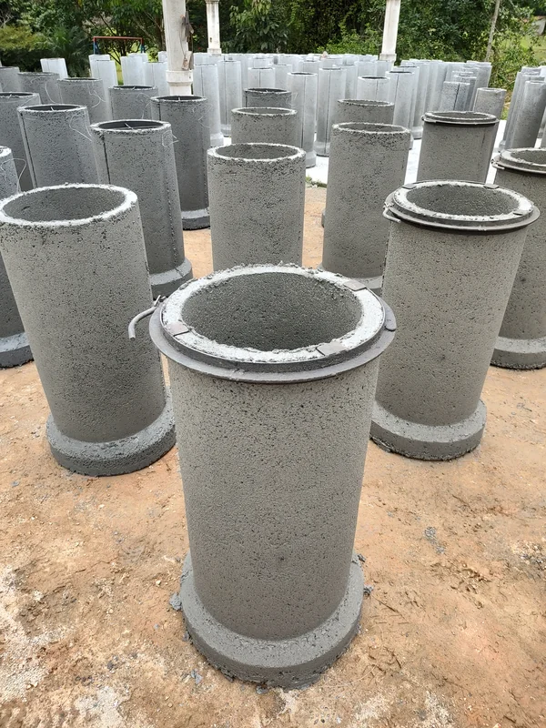
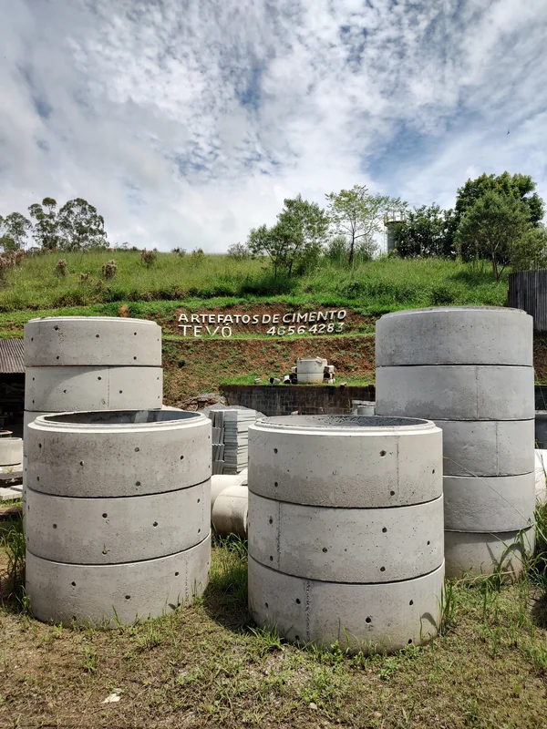

NOSSA LINHA
Produtos para Cada Etapa da Sua Obra
Escolha a categoria que você procura e fale com nossa equipe sobre medidas, disponibilidade e orçamento.
Drenagem & Rodovias

Tubos de Concreto
Manilhas e tubos simples ou armados, para galerias pluviais, drenagem, travessias e canalizações.
Consultar Bitolas
Saneamento

Anéis e Anilhas para Poço
Peças pré-moldadas para poços, cisternas, fossas e caixas de passagem. Consulte medidas e modelos.
Consultar Medidas
Cercamento & Artefatos

Mourões e Artefatos
Mourões de concreto, guias, canaletas e outras peças para cercamento e infraestrutura.
Consultar Produtos